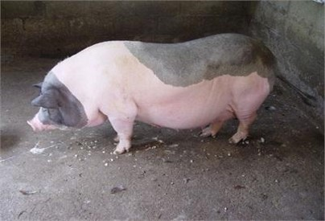
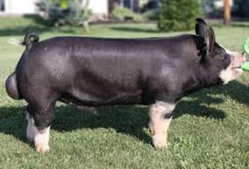
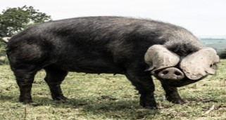

<!DOCTYPE html>
<html lang="en">

<head>
    <meta charset="UTF-8">
    <meta http-equiv="X-UA-Compatible" content="IE=edge">
    <meta name="viewport" content="width=device-width, initial-scale=1.0">

    <title>Document</title>
    <link rel="stylesheet" href="output.css">
    <!-- CSS only -->


</head>

<body>
    <div class="App">
        <nav class="navbar">
            <div class="containerr">
                <a class="navbar-brand" href="#">
                    

                </a>
                <div class="text-logo">TRƯỜNG ĐẠI HỌC NÔNG LÂM BẮC GIANG</div>
            </div>


        </nav>

        <div class="title">BÀI THU HOẠCH</div>
        <div class="description">HỌ VÀ TÊN : ĐỖ ÁNH DƯƠNG</div>
        <div class="description">LỚP: DL-THUY10A</div>
        <!-- Flickity HTML init -->
        <!-- Flickity HTML init -->

        <div class="carousel-wrapper">
            <div class="carousel-container">
                <div class="carousel">
                    <div class="image-one"></div>
                    <div class="image-two"></div>
                    <div class="image-three"></div>
                </div>
            </div>
        </div>

        <div class="content-wrapper">
            <div class="Lon-noi">CÁC GIỐNG LỢN NỘI</div>
            <div class="cards">
                <div class="card">
                    <h2 class="card-title">LỢN Ỉ</h2>
                    
                    <p class="card-desc">Tên khác: Ỉ nhăn, Ỉ bọ hung
                        <br />-Nguồn gốc & Phân bố: tại rất nhiều các tỉnh miền bắc đến năm 1990
                        <br />-Đặc điểm & ngoại hình: lông da đen nhỏ bóng, thưa, mắt híp cổ nọng, chảy sệ, mõm ngắn,
                        chân
                        thấp, bụng quét đấp, nái đi hình chữ bát, dày mỡ lưng: 3.76cm nhiều mỡ
                        <br />-Sinh sản: 4-5 tháng đã động dục, 2 lứa/năm, mỗi lứa 8-11 con, lợn ỉ đực nhảy cái rất sớm
                        ngay từ
                        lúc 3-4 tuần tuổi, đến 40 ngày tuổi tinh trùng và trứng đã có khả năng thụ thai
                    </p>
                </div>
                <div class="card">
                    <h2 class="card-title">LỢN MÓNG CÁI</h2>
                    
                    <p class="card-desc">Nguồn Gốc: Đầm Hà, Đông Triều,Tỉnh Quảng Ninh
                        <br />-Tên khác: Lợn Pha
                        <br />-Phân bố: Các tỉnh phía bắc và miền trung
                        <br />-Đặc Điểm & ngoại hình: đầu và lưng khoang đen như ngựa, lông thưa, đầu to mõm nhỏ dài,
                        tai nhỏ nhọn có nếp nhăn to. Lợn Móng Cái có ba loại: xương to, xương nhỡ và xương nhỏ. Những
                        con xương càng nhỏ thì thịt càng thơm ngon,thịt thơm ngon, chịu được kham khổ,chống đỡ bệnh tật
                        tốt
                        <br />-Sinh sản: phát dục 7-8 tháng, đẻ mắn, đẻ sai số con đẻ trung bình 8-9 con/1 lứa
                    </p>
                </div>
                <div class="card">
                    <h2 class="card-title">LỢN
                        MƯỜNG KHƯƠNG
                    </h2>
                    
                    <p class="card-desc">Tên khác:
                        <br />-Nguồn gốc & phân bố : chúng là giống lợn địa phương có từ lâu đời, được nuôi ở nhiều vùng
                        thuộc tỉnh Lào Cai, nhiều nhất là ở huyện Mường Khương
                        <br />-Đặc điểm và ngoại hình:  Đây là một trong ba giống lợn quý ở các tỉnh phía Bắc, chúng
                        cũng
                        là một trong ba giống lợn nội chủ yếu làm nền lai kinh tế ở Miền Bắc Việt Nam, có màu sắc lông
                        da đen tuyền hoặc đen có đốm trắng ở đầu đuôi và ở chân, lông thưa và mềm. Đa số lợn có mõm dài
                        thẳng hoặc hơi cong, trán nhăn, tai to hơi cúp rũ về phía trước Lợn có tầm vóc to, nhưng lép
                        người, bốn chân to cao vững chắc. Lưng không thẳng nhưng cũng không võng lắm, bụng to nhưng
                        không sệ tới sát đất, mông hơi dốc, có tốc độ sinh trưởng chậm lúc sơ sinh đạt giai đoạn 5–6
                        tháng bắt đầu tăng nhanh hơn 121,5 kg ở 18 tháng tuổi
                        <br />-Sinh sản: động dục đầu tiên muộn 6-7 tháng tuổi đẻ lứa đầu là khoảng 1 năm tuổi, chửa
                        114-116 ngày, số con đẻ ra và nuôi sống thấp (5 con/ lứa), khả năng nuôi con thấp do tập quán
                        thả rông, thiếu dinh dưỡng, số lứa đẻ 1,2 – 1,3/lứa
                        .
                    </p>
                </div>
                <div class="card">
                    <h2 class="card-title">LỢN CỎ
                    </h2>
                    
                    <p class="card-desc"><br />-Nguồn gốc & Phân bố: giống lợn nuôi bản địa của Việt Nam,được nuôi nhiều
                        ở các tỉnh Nghệ An, thích nghi ở các tỉnh Miền Trung
                        <br />-Tên khác: lợn cắp nách
                        <br />-Đặc điểm & ngoại hình: lợn cỏ là giống lợn có thân hình nhỏ, lợn cỏ có tầm vóc nhỏ, nhỏ
                        hơn so với các giống lợn nội khác, một năm chỉ đạt khoảng 30-40kg, Lợn có màu da và lông đen
                        tuyền, mõm dài, chân nhỏ, Đại đa số là lợn lang trắng đen, mõm dài, xương nhỏ, chủ yếu đi bán,
                        bụng xệ, da mỏng, lông thưa, lợn cỏ của dân tộc Mường có lông xù, dày, tai nhỏ, chân nhỏ, mõm
                        dài và thon gọn. Lợn chạy nhanh, dễ nuôi, sức đề kháng tốt, chịu đựng khí hậu khắc nghiệt (nóng)
                        và thức ăn hạn chế.
                        <br />-Sinh sản: 1,2 – 1,3 lứa/năm, 6-7 con/lứa, lợn nái động dục rất sớm, khoảng 3 tháng
                        tuổi,tuổi đẻ lứa đầu khoảng 10 tháng tuổi,con cai sữa ( 2 tháng tuổi) khoảng 3kg.
                        .
                    </p>
                </div>
                <div class="card">
                    <h2 class="card-title">LỢN SÓC

                    </h2>
                    
                    <p class="card-desc">Tên khác: lợn Đê
                        <br />-Nguồn Gốc: của người Êđê, người M'nông.
                        <br />-Phân bố: Giống lợn nhà này phù hợp một số đặc điểm và địa hình của buôn làng các dân tộc
                        thiểu số ở Tây Nguyên
                        <br />-Đặc điểm & ngoại hình: Lợn Đê hình dáng thì cũng giống lợn ỉ, lưng cong bụng ỏng. Con cái
                        khi nuôi con bụng nó sệ xuống, các núm vú thường kéo là trên đất. Lông dày da màu mun đốm. Vì
                        chúng được nuôi theo kiểu tự do nên thịt ăn ngon, thơm, lợn là các loại thảo mộc (cỏ, củ, lá ăn
                        được) phù hợp với địa hình của buôn làng.
                        Sinh sản:Do hoang dã hoặc nuôi nhốt ít được chăm sóc nên không tránh được phối cận huyết,tuổi
                        thành thục về tính muộn, thời gian động dục lại sau đẻ chậm, số lứa 1,1 – 1,2 lứa/năm, động dục
                        lần đầu 6-7 tháng, đẻ lần đầu 10-15 tháng, 6-10 con/lứa, con sơ sinh 0,4-0,45g/con.
                        .
                    </p>
                </div>
                <div class="card">
                    <h2 class="card-title">LỢN MẸO
                    </h2>
                    
                    <p class="card-desc">Tên khác: Lợn Mèo, Heo Mẹo
                        <br />-Phân bố: là giống lợn của Người H'Mông, được nuôi tại các hộ gia đình thuộc một số xã
                        miền núi trên địa bàn Nghệ An, Hà Tĩnh, Lào Cai, Yên Bái
                        <br />-Đặc điểm & ngoại hình: Tầm vóc to, thể hình cứng cáp, bốn chân đứng thẳng Lông da màu
                        đen, da dày, lông dài và cứng, thường có 6 điểm trắng ở 4 chân, trán và đuôi, một số có loang
                        trắng ở bụng. Đầu to, rộng, mặt hơi gãy, trán dô và thường có khoáy trán, mõm hơi dài, tai vừa
                        phải và hơi chúc về phía trước. Vai rộng được hình thành tại vùng núi cao của dãy Trường Sơn,Qua
                        hàng trăm năm sống ở vùng núi cao, lợn Mẹo đã thích nghi và phát triển tốt trong điều kiện sinh
                        thái, kinh tế và tập quán chăn nuôi của người H’Mông địa phương, thịt tương đối cao với tỷ lệ
                        móc hàm 83,53%, tỷ lệ xẻ 72,26%, diện tích cơ lưng 104,82 cm2.
                        <br />-Sinh sản: Lợn đực có thành thục sớm,  lợn cái thành thục muộn  chu kỳ động dục 27,53
                        ngày,con sơ sinh 0,47kg 5-6con/lứa,mang thai 114,26 ngày, khoảng cách 2 lứa đẻ trung bình 234,53
                        ngày
                        .
                    </p>
                </div>
                <div class="card">
                    <h2 class="card-title">LỢN TÁP NÁ
                    </h2>
                    
                    <p class="card-desc">Tên khác:
                        <br />-Nguồn gốc & phân bố: là một giống lợn nội của Việt Nam, được hình thành từ lâu đời chủ
                        yếu ở huyện Thông Nông, tỉnh Cao Bằng, chúng nguồn gene vật nuôi bản địa quý.
                        <br />-Đặc điểm & ngoại hình: màu sắc lông da rất đặc trưng là Lông và da đều đen, ngoại trừ 6
                        điểm trắng giữa trán, 4 cẳng chân và chóp đuôi,đầu to vừa phải, bụng không sệ di chuyển chậm, dễ
                        nuôi vì chúng phàm ăn, ăn khoẻ, ăn bất cứ loại thức ăn nào, chống chịu bệnh tật rất tốt hầu như
                        không bị bệnh kể cả nuôi trong điều kiện hoang vu, lượng thịt thơm ngon, đã thực sự trở thành
                        thịt lợn đặc sản, chưa bị lai tạp nhiều với các giống lợn nội và ngoại khác
                        <br />-Sinh sản: có từ 8 đến 12 vú, nhưng phổ biến nhất là 10 vú.  tỷ lệ sinh rất thấp, số con
                        nái sinh sản tốt bình quân đạt 2 lứa/ năm mỗi lứa chỉ đạt khoảng 7 - 9 con
                        .
                    </p>
                </div>
                <div class="card">
                    <h2 class="card-title">LỢN
                        LŨNG PÙ
                    </h2>
                    
                    <p class="card-desc">Tên Khác
                        <br />-Nguồn gốc & Phân bố: là giống lợn bản địa ở Mèo Vạc, tên được đặt dựa theo địa danh Lũng
                        Pù, hiện phân bố được chăn nuôi tại 4 huyện trong tỉnh Hà Giang.
                        <br />-Đặc điểm & ngoại hình: Lợn đen Lũng Pù có tầm vóc to lớn, lông đen, dày và ngắn, da thô,
                        tai nhỏ cúp, mõm dài trung bình,  một loại 4 chân trắng và có đốm trắng ở trán và mõm, một loại
                        đen tuyền,  xoáy trên đầu màu trắn, ở tránxoáy ngược lên đỉnh đầu. Dễ nuôi, phàm ăn và có sức đề
                        kháng cao, chống chịu bệnh tốt. Do được thuần hóa lâu đời nên thích nghi tốt với điều kiện khí
                        hậu khắc nghiệt của các huyện vùng cao, dễ nuôi, phàm ăn và có sức đề kháng cao, chống chịu bệnh
                        tốt, thịt lại thơm ngon, Tỷ lệ móc hàm trung bình là 78,33%, tỷ lệ thịt xẻ trung bình là 66,02%.
                        <br />-Sinh sản: Trung bình có 10 vú và bình quân đẻ 1,5 đến 1,6 lứa/năm, con sơ sinh là
                        0,5-0,6 kg
                        .
                    </p>
                </div>
                <div class="card">
                    <h2 class="card-title">LỢN BA
                        XUYÊN
                    </h2>
                    
                    <p class="card-desc">Nguồn gốc & phân bố: là con lai giữa Berkshire với giống địa phương năm 1930,
                        - Tập trung nhiều Miền nam ở tỉnh Sóc Trăng, và hiện nay cỏ rải rác ở các tỉnh Vĩnh long...,
                        <br />-Tên khác: Lợn Heo Bông
                        <br />-Đặc điểm & ngoại hình: Phần lớn lợn Ba Xuyên có cả bông đen và bông trắng trên cả da và
                        lông, phân bố xen kẽ nhau. Lông và da đều có màu bông đen trắng xen kẽ lẫn nhau. Đầu to vừa
                        phải, mặt ngắn, mõm hơi cong, trán có nếp nhăn, tai to vừa và đứng. Bụng to nhưng gọn, mông
                        rộng. Chân ngắn, mỏng xoè, đuôi nhỏ và ngắn. Khối lượng sơ sinh 350 – 450 gr/con. Trưởng thành
                        nặng 140 – 170 kg/ khả năng cho thịt tốt, tuy nhiên chất lượng thịt còn chưa cao do mỡ lưng khá
                        dày. Độ dày mỡ lưng 4,35 cm. Tỷ lệ thịt móc hàm 73.31%.
                        <br />-Sinh sản: Lợn đực có biểu hiện nhảy cái lúc 4-5 tháng tuổi, nhưng phối giống tốt khi 6-7
                        tháng tuổi với khối lượng trên 45 kg. Lợn đực có thể giao phối trực tiếp với khoảng cách 2-3
                        ngày/1ần. Lợn cái biểu hiện động dục lần đầu lúc 6-7 tháng tuổi, một năm đẻ 2 lứa, 8-9 con/lứa
                        .
                    </p>
                </div>
                <div class="card">
                    <h2 class="card-title">LỢN
                        THUỘC NHIÊU

                    </h2>
                    
                    <p class="card-desc">Tên khác
                        <br />-Nguồn gốc & phân bố: Đây là con lai giữa lợn Bồ Xụ và lợn Yorkshire ở vùng Thuộc Nhiêu
                        và Cai Lậy, tỉnh Tiền Giang.
                        <br />-Đặc điểm & ngoại hình: có lông màu trắng, có thể có vài đốm đen nhỏ. Lợn Thuộc Nhiêu có
                        màu lông da trắng tuyền, một số có bớt đen nhỏ, thường ở quanh mắt, Đầu to vừa, mõm hơi cong,
                        mũi thẳng thon, tai nhỏ, ngắn, hơi nhô về phía trước. Đa số lợn có thể chất thanh sổi, thân hình
                        vuông, thấp, lưng hơi oằn, mông vai nở, chân thấp, yếu, đi ngón, móng xoè, đuôi ngắn.Tỷ lệ thịt
                        xẻ 74.32%, tỷ lệ thịt nạc đạt 32.03%, tỷ lệ thịt mỡ đạt 38.20%,mang nhiều đặc tính của lợn
                        Yorkshine, chịu đựng được nhiều điều kiện chăn nuôi kham khổ, có khả năng sử dụng tốt thức ăn
                        nghèo protein, nuôi con khéo, chống chịu bệnh tốt, phù hợp với chăn nuôi gia đình.
                        <br />-Sinh sản: Lượng tinh dịch mỗi lần xuất 90-100 ml, hoạt lực tinh trùng đạt 80% và nồng độ
                        tinh trùng khoảng 175 triệu/ml lợn cái động dục đầu tiên 210 ngày, đẻ lứa đầu 355 ngày,
                        2lứa/năm, 9,5con/lứa.

                        .
                    </p>
                </div>

            </div>
            <div class="lon-ngoai">CÁC GIỐNG LỢN NGOẠI</div>
            <div class="cards">
                <div class="card">
                    <h2 class="card-title">LỢN yorkshire
                    </h2>
                    
                    <p class="card-desc">Tên tiếng anh : Yorkshire
                        <br />-Tên khác: Lợn Đại Bạch
                        <br />-Nguồn gốc:  có nguồn gốc ở Yorkshire, Anh quốc vì thế còn được gọi là lợn Yorkshire. Đầu
                        tiên được công nhận vào năm 1868, giống lợn nuôi này là tổ tiên của lợn Yorkshire Mỹ,được nhập
                        từ liên xô (1964),cuba (1970), nhật bản (1976),Bỉ (1986), Mỹ(2000)
                        <br />-Phân bố: khắc cả nước
                        <br />-Đặc điểm & Ngoại hình: Lông da TRẮNG tuyền,tai to đứng,trán rộng,mặt gẫy. 4 chân chắc
                        khỏe, thân hình vững chắc , nhìn ngang hình chữ nhật , mình dài , mông vai nở, lưng thẳng bụng
                        gọn, con Đực nặng: 250-320Kg con cái 200-250Kg, chịu được nóng kém
                        <br />-Hướng Sản xuất: hướng thịt nạc 52-55% và được chọn làm con cái khi lai các dòng F1,F2...
                        <br />-Sinh Sản: phối giống lần đầu lúc 8 tháng đạt 120Kg, số lứa 2,0-2,2/năm, số con
                        10-13/lứa/năm, khả năng sinh sản cao, mắn đẻ và đẻ nhiều nuôi con khéo.

                    </p>
                </div>
                <div class="card">
                    <h2 class="card-title">LỢN LANDRACE
                    </h2>
                    
                    <p class="card-desc">Tên tiếng anh: Landrace
                        <br />-Tên khác: lợn tai cụp
                        <br />-Nguồn gốc: nguồn gốc Đan Mạch được hình thành vào khoảng 1924-1925 do quá trình tạp giao
                        giữa các giống lợn đến từ Anh, Tây Ban Nha, Ý, Bồ Đào Nha, Trung Quốc tạo thành.
                        <br />-Phân bố: được nhập vào Việt Nam vào khoảng 1970 qua Cuba, được chọn một trong những giống
                        tốt để thực hiện chương trình nạc hóa đàn lợn ở Việt Nam
                        <br />-Đặc điểm & ngoại hình: Toàn thân lợn có màu TRẮNG tuyền, đầu nhỏ, dài, tai to rủ xuống
                        kín mặt, tai cúp về phía trước, cổ nhỏ và dài, vai-lưng-mông-đùi rất phát triển, mông đùi to,
                        mõm thẳng, mông nở, ngoại hình thể chất vững chắc. Toàn thân có dáng hình thoi nhọn giống như
                        quả thủy lôi, do chúng nhiều hơn giống lợn khác 1-2 đôi xương sườn nên thân rất dài,
                        <br />-Hướng Sản xuất: Trọng lượng trưởng thàn,h 250 – 300 kg, Tỷ lệ nạc từ 70 – 80%, Tiêu tốn
                        thức ăn/kg tăng trọng: 2,8 – 3,0 kg, Đạt 100 kg khi được 160 – 170 ngày tuổi, Kém thích nghi
                        trong điều kiện thờI tiết nóng, nước chua phèn, mặn.
                        <br />-Sinh sản: khả năng sinh sản cao, mắn đẻ và đẻ nhiều trung bình đạt 1,8 – 2 lứa/năm. Mỗi
                        lứa đẻ 10 -12 con, trọng lượng sơ sinh (Pss) trung bình đạt 1,2 – 1,3 kg, trọng lượng cai sữa
                        (Pcs) từ 12 – 15 kg. Sức tiết sữa từ 5 – 9 kg/ngày. Khả năng sinh trưởng của lợn rất tốt,  tiết
                        sữa tố.

                    </p>
                </div>
                <div class="card">
                    <h2 class="card-title">LỢN DUROC

                    </h2>
                    
                    <p class="card-desc">Tên Tiếng anh: Duroc
                        <br />-Nguồn gốc: là giống lợn của mỹ được nhập vào miền nam việt nam từ trước năm 1975; nhập
                        vào miền bắc từ cuba(1978), từ mỹ(2000)
                        <br />-Phấn bố: các tỉnh miền nam và số ít miền bắc
                        <br />-Đặc điểm & ngoại hình: Lợn toàn thân có lông màu hung đỏ hoặc nâu đỏ đầu to vừa phải, mõm
                        dài, tai to rủ về trước và dài, cổ nhỏ và dài, mình dài, vai-lưng-mông-đùi rất phát triển
                        <br />-Hướng sản xuất: là giống lợn cho nhiều nạc, mỡ lưng mỏng (10 – 12 mm), nạc có sớ cơ dai,
                        ít vân mỡ nên không ngon lắm, tỷ lệ nạc quày thịt có thể 65%. Chúng tăng trọng nhanh, tiêu tốn
                        thức ăn thấp, tỷ lệ nạc cao và chất lượng thịt tốt. có khả năng tăng trọng từ 750-800 g/ngày, 6
                        tháng tuổi heo thịt có thể đạt 105–125 kg. Duroc trưởng thành con đực nặng tới 370 kg, con cái
                        250–280 kg. Ở 6 tháng tuổi heo đạt trọng lượng trung bình 70 – 80 kg, nọc nái trưởng thành có
                        thể đạt 200 – 250 kg
                        <br />-Sinh sản: Trung bình đạt 1,7 – 1,8 lứa/năm. Mỗi lứa đẻ từ 9 đến 11 con, heo con trung
                        bình đạt 1,2 – 1,3 kg, Pcs 12 – 15 kg. Sức tiết sữa của lợn đạt 5 – 8 kg/ngày. Khả năng sinh
                        trưởng của heo tốt. Tuy nhiên khả năng sinh sản của nái không cao, đẻ khoảng 7-9 con/lứa, nuôi
                        con kém. Lợn nái đẻ mỗi năm 1,8 lứa, mỗi lứa 8 – chín con, nái tiết sữa kém, nuôi con kém, nhu
                        cầu dinh dưỡng cao, sức kháng bệnh kém.

                    </p>
                </div>
                <div class="card">
                    <h2 class="card-title">Lợn Piétrain

                    </h2>
                    
                    <p class="card-desc">Tên tiếng anh: Piétrain
                        <br />-Nguồn gốc: có nguồn gốc từ Bỉ và cũng đã phổ biến khắp nơi trên thế giới như Pháp, Mỹ,
                        Canada… Pietrain cổ điển là giống lợn xuất xứ từ làng Pietrain,
                        <br />-Đặc điểm & ngoại hình: Chúng có bộ lông và da màu trắng đen xen lẫn nhau, tạo thành các
                        đốm to, rõ và rất đẹp. Pietrain có ngoại hình đặc trưng của một giống lợn siêu nạc điển hình như
                        thân dài, mông nở, đùi to, lưng rộng, hai cơ thăn rất phát triển, cao hơn cả cột sống, tạo ra
                        một rãnh giữa lưng chạy suốt từ vai xuống đến gần mông, tai thẳng đứng, đầu to vừa phải, mõm
                        thẳng, 4 chân thẳng. Lợn có sắc lông đen, bông trắng, ít mỡ, các bắp cơ lộ rõ dưới da, nhất là
                        phần mông, đùi lưng, thích nghi kém với điều kiện khí hậu quá nóng, quá lạnh, quá ẩm, và rất dễ
                        mắc các bệnh về dinh dưỡng, sinh sản, hô hấp, tiêu hóa… Hiện nay heo nuôi thuần rất khó ở quy mô
                        gia đình và trang trại nhỏ, các trại lớn thường nuôi để sản xuất đực cuối tạo dòng heo con nuôi
                        thịt, hoặc sản xuất nọc lai 2 máu cho dễ nuôi trong nhân dân, Heo lực sĩ vì cơ bắp cuồn cuộn.
                        <br />-Hướng sản xuất:  giống lợn có tỷ lệ nạc cao nhất trên thế giới, có thể đạt 60 - 62%. Lợn
                        đực trưởng thành nặng 270 – 350 kg/con, lợn cái nặng 220 – 250 kg/con, nuôi 6 tháng tuổi đạt
                        100 kg/con, Ở 150 ngày tuổi đạt trung bình 80 kg, nọc nái trưởng thành có thể đạt 200 – 250 kg,
                        heo nái mỗi năm đẻ 1.8 lứa, mỗi lứa 8 – chín con. Heo độ dày mỡ lưng dưới 10 mm, tỉ lệ nạc trên
                        quày thịt chiếm 65% như sơ nạc thô, dai, ít có vân mỡ, hương vị không thơm ngon.
                        <br />-Sinh sản: không thích hợp dùng làm nái, có tuổi đẻ lứa đầu chậm: 418 ngày tuổi và số con
                        sơ sinh bình quân thấp (9 - 10 con/ ổ), nuôi con kém, năng suất sữa kém được tuyển lựa để tạo
                        dòng đực cuối

                    </p>
                </div>
                <div class="card">
                    <h2 class="card-title">LỢN Berkshire


                    </h2>
                    
                    <p class="card-desc">Tên tiếng anh: Berkshire
                        <br />-Nguồn gốc: Vào thế kỷ 18, cách đây khoảng 300 năm, lợn Berkshire được khám phá bởi Oliver
                        Cromwell ở vùng shire của Berks (nước Anh). Nguồn gốc của giống lợn này là lợn cỏ màu hơi đỏ và
                        sống ở vùng cát. Năm 1823, lợn này được công nhận bởi Hội đồng giống Hoàng gia Anh. Lợn
                        Berkshire chủ yếu được nuôi ở vùng Đông Nam nước Anh. Trước năm 1970, giống lợn Berkshire được
                        nuôi khá phổ biến ở châu Âu và một số nước châu Á và Phi.
                        <br />-Phân Bố: Lợn Berkshire chủ yếu được nuôi ở vùng Đông Nam nước Anh
                        <br />-Đặc điểm & Ngoại hình: Lợn Berkshire toàn thân có màu đen, có sáu điểm trắng ở trán, bốn
                        chân và đuôi. Thân dài, rộng, đầu ngắn, mặt hơi cong, tai nhỏ hơi hướng về phía trước, cổ ngắn,
                        ngực sâu rộng, xương sườn nở, bốn chân thẳng vững chắc, lông mượt, tính tình hiền, thể chất
                        khỏe, lợn trưởng thành có thể nặng tới 270 – 300 kg.
                        <br />-Sinh sản: phát dục thì trọng lượng sơ sinh trung bình 1,1 – 1,2 kg; trọng lượng cai sữa
                        trung bình 12 – 15 kg, đẻ ít con, trung bình 7 – tám con /lứa.

                    </p>
                </div>
                <div class="card">
                    <h2 class="card-title">Lợn Hampshire

                    </h2>
                    
                    <p class="card-desc">Tên tiếng anh: Hampshire
                        <br />-Nguồn gốc: giống lợn cao sản xuất xứ từ vùng Hampshire của Anh Quốc nhưng được nhập vào
                        vùng Bắc Mỹ từ thế kỷ 19 và trở nên phổ biến
                        <br />-Phân bố: cũng được chăn nuôi ở Việt Nam, đây là giống lợn có tính khí năng.
                        <br />-Đặc điểm & ngoại hình: màu lông da đen, vùng ngực và chân trước có màu lông da trắng. Tai
                        thẳng, đầu to vừa phải, mõm thẳng, chân khỏe và chắc chắn. Lợn có lông màu đen 2 chân trước có
                        đai màu trắng, tai thẳng, đầu to vừa phải, mõm thẳng, chân khỏe và chắc chắn, lưng hơi cong. Lợn
                        Hampshire là giống lợn hướng nạc, có khả năng tăng khối lượng nhanh và khả năng chuyển hóa thức
                        ăn tốt. Lợn Hampshire có khả năng tăng khối lượng 750g/con/ngày.
                        <br />-Sinh sản: khả năng sinh sản thấp hơn các giống ngoại khác, đẻ 7 -8 con/lứa, khả năng nuôi
                        con khéo, tỷ lệ nuôi sống cao. đẻ từ 10-12 con/lứa, mỗi năm đẻ 1-8 – 2 lứa. Trọng lượng sơ sinh
                        trung bình đạt 1,1 – 1,2 kg. Sức tiết sữa 5 – 7   kg/ngày

                    </p>
                </div>
                <div class="card">
                    <h2 class="card-title"> LỢN Chester White

                    </h2>
                    
                    <p class="card-desc">Tên tiếng anh: Chester White
                        <br />-Nguồn gốc: là một giống lợn nhà có nguồn gốc từ Hạt Chester, Pennsylvania. Nó trước đây
                        được gọi là Chester County White. Nó được phát triển lần đầu tiên vào khoảng năm 1815-1818, sử
                        dụng các giống lợn trắng lớn phổ biến ở vùng Đông Bắc Hoa Kỳ và một con lợn trắng được nhập từ
                        John Russell Duke của Bedford, hạt Bedfordshire, Anh, được gọi là giống Woburn. Vào năm 1848,
                        hai nhà lai tạo tại một hội chợ của quận
                        <br />-Đặc điểm & ngoại hình: đầu to tai chồng chéo, da trắng, trắng hồng, đuôi dài, xoắn,chân
                        ngắn, 227-295 kg (heo đực trung bình và lợn nái), lợn chester ăn được khoai tây, vỏ ngô, hoặc
                        bất kỳ loại rau, bột đậu nành và ngô , phát triển rất nhanh và hàm lượng chất béo cao và hương
                        vị thơm ngon

                    </p>
                </div>
                <div class="card">
                    <h2 class="card-title">LỢN ĐEN LỚN

                    </h2>
                    
                    <p class="card-desc">Tên tiếng anh:  Cornwall,  hay còn là lợn đen lớn
                        <br />-Phân bố: phổ biến ở Hung-ga-ri và một số nước Nam Âu vào những năm đầu của thế kỷ XX
                        <br />-Nguồn gốc: có nguồn gốc từ vùng Cornwall, phía Nam nước Anh được hình thành vào khoảng
                        1824-1825. Do quá trình tạp giao giữa các giống lợn từ Anh, Tây Ban Nha, Ý, Bồ Đào Nha, Trung
                        Quốc tạo thành. Nhìn chung, lợn Cornwall được tạo thành bởi quá trình lai tạo giữa giống lợn
                        Berkshire với Lợn Trung Quốc
                        <br />-Đặc điểm & ngoại hình: Toàn thân lợn có màu đen tuyền, đầu nhỏ và dài, tai to dài rủ
                        xuống kín mặt, cổ nhỏ – dài, mình dài, vai-lưng-mông-đùi phát triển. Toàn thân có dáng hình dáng
                        tiến về phía trước, Lợn chậm chạp và ít vận động tỷ lệ mỡ khá cao. Lợn có khả năng tăng trọng từ
                        500-600 g/ngày, 7 tháng tuổi Lợn thịt có thể đạt 90–100 kg. Khi trưởng thành con đực nặng
                        300 kg, con cái 220–240 kg. Lợn Cornwall được coi là giống lợn thích nghi khá tốt ở các vùng xứ
                        nóng và có sức đề kháng cao.
                        <br />-Sinh sản: khả năng sinh sản thấp, đẻ ít con và thưa trung bình đạt 1,4 – 1,5 lứa/năm. Mỗi
                        lứa đẻ 9 -10 con, trọng lượng sơ sin (Pss) của Lợn con trung bình đạt 1,2 – 1,3 kg, trọng lượng
                        cai sữa (Pcs) đạt 12 – 15 kg. Sức tiết sữa Lợn 3 – 5 kg/ngày. Khả năng sinh trưởng của Lợn chậm


                    </p>
                </div>
                <div class="card">
                    <h2 class="card-title">LỢN MI SƠ

                    </h2>
                    
                    <p class="card-desc">Tên tiếng anh: Lợn Meishan hay còn gọi là lợn mặt nhăn
                        <br />-Nguồn Gốc: có nguồn gốc từ Trung Quốc ở vùng Mi Sơn. Lợn Meishan từ lâu đã được xếp vào
                        giống cực kỳ quý hiếm của Trung Quốc cần được bảo tồn nguồn gen.
                        <br />-Đặc điểm & Ngoại hình: có màu đen, mặt và da nhăn, lông đen toàn thân và cỏ vành lông
                        trắng vắt qua vai bao gồm cả chân trước và ngực. Lợn có đầu nhỏ thanh, cổ dài và hẹp thân. Toàn
                        thân trông chắc chắn và vận động tốt, thích hợp với hệ thống chăn nuôi chăn thả trên đồng cỏ.
                        Lợn nái trưởng thành cao khoảng 57,8 cm và có trọng lượng hơi tối đa trên 60 kg. Tuy nhiên lợn
                        Meishan lớn chậm, nhiều mỡ và cấu tạo thân thịt kém.có mùi vị thơm ngon rất đặc trưng. Ngoài ra
                        giống lợn này còn có khả năng chống chịu với rất nhiều loại bệnh tật khác nhau do chủ yếu ăn
                        thức ăn thô tự nhiên.
                        <br />-Sinh sản: là giống mắn đẻ nhất trong số các giống lợn trên thế giới với trung bình mỗi
                        lứa từ 15-16 con và 2 lứa/năm. Lợn Meishan có nhiều vú, thành thục sinh dục sớm ngay từ lúc chưa
                        đầy 2,5 tháng tuổi so với 5 tháng tuổi ở các giống lợn khác. Con nái trông bề ngoài thì dữ dằn
                        nhưng lại rất hiền và nuôi con rất tốt, trung bình 15-16 con/lứa, có khi 20 -22 con. Lợn có khả
                        năng tăng trọng tương đối tốt


                    </p>
                </div>
                <div class="card">
                    <h2 class="card-title">HEO VÒI

                    </h2>
                    
                    <p class="card-desc">Tên khác: Heo vòi Mã lai.
                        <br />-Nguồn gốc: từng được tìm thấy trên khắp các khu rừng mưa nhiệt đới vùng thấp ở Đông Nam Á
                        <br />-Phân bố: chủ yếu ở các khu rừng mưa Đông Nam Á, chủ yếu ở các
                        nước:Campuchia,Indonesia,Lào,Malaysia,Myanma,Thái Lan, và chúng có phân bố ở Việt Nam.
                        <br />-Đặc điểm & Ngoại hình: có cơ thể lớn, chắc nịch với một vòi nổi bật được hình thành bởi
                        một mũi mở rộng và môi trên, có khối lượng từ 250 đến 540 kg, với chiều dài 1,8 đến 2,5 m và
                        chiều cao 0,9 đến 1,1 m. Con cái thường lớn hơn con đực khoảng 25 đến 100 kg. Heo vòi trưởng
                        thành có hoa văn màu sắc ấn tượng, với một nửa phía trước màu đen của cơ thể, hai bên màu trắng
                        và chân sau màu đen, Đôi mắt nhỏ, tròn và không di động lắm, Ngón chân thứ tư của mỗi bàn chân
                        trước không chạm đất, thính giác và khứu giác rất tốt.
                        <br />-Sinh sản: độ thuần thục sinh dục khi khoảng 3 năm tuổi và chúng có thể sống tới 30 năm.
                        Mang thai của heo vòi Malaysia là khoảng 390 ngày, sau đó heo vòi con được sinh ra nặng khoảng
                        6,8 kg, nói chung thì lợn vòi núi thích sống đơn độc và nhút nhát
                    </p>
                </div>

            </div>
        </div>
    </div>


    <script type="text/javascript" src="index.js">

    </script>
    <!-- JavaScript Bundle with Popper -->

</body>

</html>